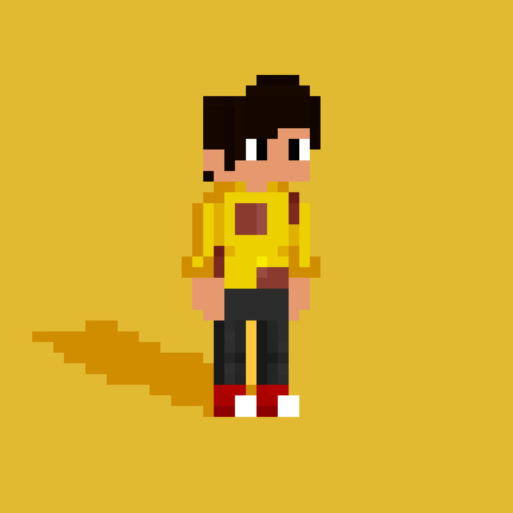

WELCOME TO ADON'S WEB PAGE
Hi all,
I am Adon Joseph, I am a student of Little Flower School located in Chelevoor and in class 10th. Now i am learning Java, CSS ,and HTML. Because of school works now i am taking a break from all this kind of stuff.
SEE YOU SOON... THANK YOU!